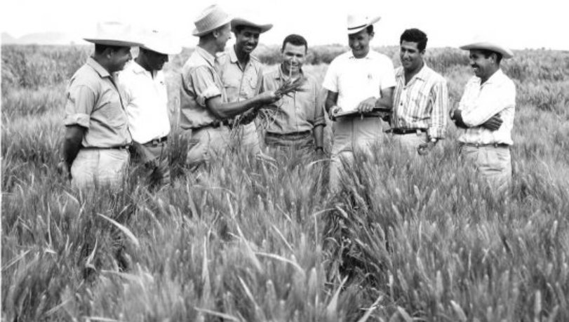

Dr. Norman Borlaug,third from the left,trains biologists in Mexico on how an increase wheat yields - part of his life-long war on hunger
- 1914-Born in Cresco, lowa
- 1933-Leaves his family's farm to attend the University of Minnesota, thanks to a Depression era program known as the "National Youth Administration
- 1935-Has to stop school and save up more money. Works in the Civilian Conservation Corps, helping starving Americans. "I saw how food changed them", he said "All of this left scars on me"
- 1937-Finishes university and takes a job in the US Forestry Service
- 1938-Maries wife of 69 years Margret Gibson. Gets laid off due to budget cuts, Inspired by Elvin Charles Stakman, he returns to school study under Stakman, who teaches about breeding pest-resistent plants.
- 1941-Tries to enroll in the military after the Pearl Harbor attack, but is rejected. Instead, the retary asked his lab to work on waterproof glue. DDT to control malaria difect and other applied science
- 1942-Receives a PhD. 1942 a Ph.D. in Genetics and Plant Pathology
- 1944-Rejects a 100% salary increase from Dupont, leaves behind his pregnant wife, and flies to Mexico to head a new plant pathology program. Over the next 16 years, he 6.000 different strains of disease resistent wheat including different varieties for each major climate on Earth.
- 1945-Discovers a way to grown what twice each season, doubling wheat yields
- 1953-crussesa shon sturdy dwarf breed of wheat with a high-veidling American breed, creating a strain that responds well to fertilizer It goes on to provide 95% of Mexico's wheat
- 1962-Visits Delhi and brings his high-yielding strains of wheat to the Indian subcontinent in time to help mitigate mass starvation due to a sapally expanding population
- 1970-receives the Nobel Peace Prize
- 1983-helps seven African countries dramatically increase their malze and sorghum yields
- 1984-becomes a distinguished professor at Texas A&M University
- 2005-states "we will have to double the world food supply by 2050 Argues that genetically modified crops are the only way we can meet the demand, as we run t of a land Sayi GM copsar or inerently dangerous because we've been genetically modifying plants and animals for a long time Long before we called it science, people were selecting the her beed" becomes a distinguished professor at Texas A&M University
- 2009-dies at far age if 95.
""Bislang lite and achieve air testimony to the far-reachuig contribution that one man's towering intellect, persisance and scientis vision can make to human peace and progress."
--Indian Prime Minister Manmohan Singh